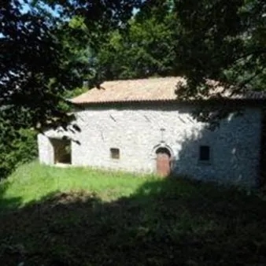

dom 11 ott · dalle 08:30
Il Cammino delle 44 Chiesette Votive: Tappa 5 Masseris - Scrutto
Domenica 11 ottobre 2026 - Dalle ore 8:30 alle 18:00 Ritrovo presso il parcheggio della stazione dei Carabinieri di Scrutto (San Leonardo) Quinta tappa del cammino delle 44 chiesette votive.
 Indicazioni
Indicazioni
- Costi e prenotazioni
- Costo non indicato · Prenotazione non indicata
- Programma
- Programma da verificare. Apri la fonte ufficiale per orari e possibili aggiornamenti.
- In caso di maltempo
- Nessuna indicazione specifica pubblicata.
- Note
- Acquisito automaticamente dalla fonte.
L’EVENTO
Descrizione completa
Domenica 11 ottobre 2026
Dalle ore 8.30 alle ore 18.00 Con questa quinta tappa proseguiamo il percorso lungo il Cammino delle 44 Chiesette Votive che tappa per tappa ci porterà a scoprire tutto il percorso.
Scendiamo al paese di Iellina con i suoi caratteristici Kosolec per poi superare in traversata Vartacia/Vartača e Cepletischis/Čeplešišče e giungere a Polava e al suo inaspettato centro buddista. Da qui il sentiero CAI 745 ci porta a conquistare il Monte San Martino (987 m) Sul primo ripiano (965 metri) è posizionata la chiesetta votiva dedicata all'omonimo santo, costruita nel XIII secolo. Presso la Chiesetta il 21-22 aprile 1848 volontari della popolazione delle valli difesero i confini della patria dalle truppe austriache che, provenienti dal vicino passo di Luico/Livek, si dirigevano verso la città di Udine insorta. Tra antichi castagni, attraverso il sentiero CAI 761 discendiamo la lunga dorsale tra i boschi fino ai paesi di Clastra e Scrutto sul fondovalle della Val Cosizza.
Visiteremo le chiesette votive San Martino, i ruderi della Chiesetta di Sant’Egidio , Santa Lucia, San Bartolomeo e San Giusto . PROGRAMMA
08:30 – Ritrovo presso il parcheggio della stazione dei Carabinieri di Scrutto (San Leonardo) 9:00 - Trasferimento con mezzi messi disposizione dall'organizzazione a Masseris 18:00 – Rientro a Scrutto Accompagnatori: Robert Schuhmann, guida turistica FVG NOTE ORGANIZZATIVE
Pranzo al Sacco in proprio.
L’escursione avverrà su tracciati privi di difficoltà alpinistiche ma si richiede ugualmente un allenamento alla camminata.
Il percorso si snoda su strada e sentiero.
Lunghezza 16,4 Km, dislivello circa + 640m/ – 1030 m , ore percorrenza 7:00
Sono graditi gli amici a quattro zampe, purché educati alla convivenza con il pubblico.
Il percorso non è ad anello.
IL PROGRAMMA
Programma e orari
Appuntamenti raccolti dalle fonti elencate. Dove manca un orario, non è ancora disponibile in questa scheda.
Programma pubblicato
- ore 8.30 alle ore 18.00
- 08:30 – Ritrovo presso il parcheggio della stazione dei Carabinieri di Scrutto (San Leonardo)
- 9:00 - Trasferimento con mezzi messi disposizione dall'organizzazione a Masseris
- 18:00 – Rientro a Scrutto
INFORMAZIONI UTILI
Prima di partire
- Controllare la fonte prima di partire.
ORGANIZZAZIONE